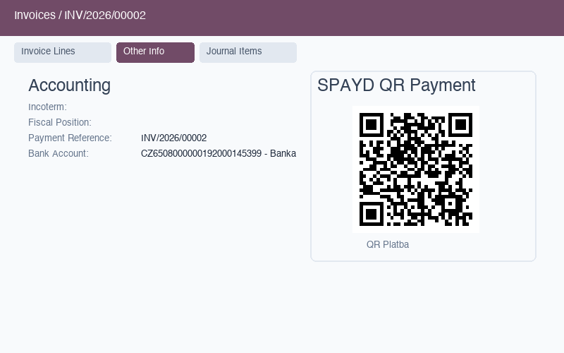
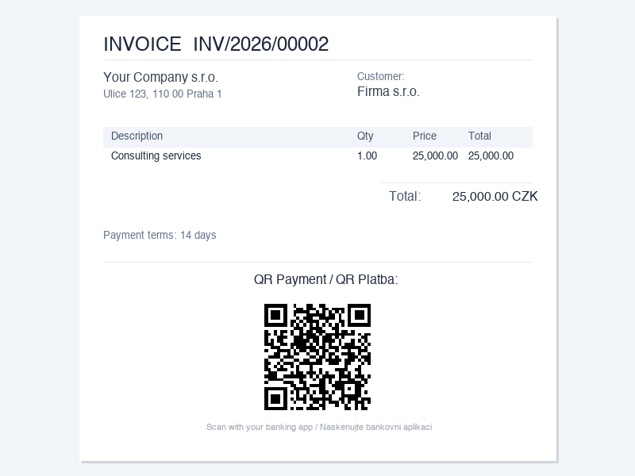
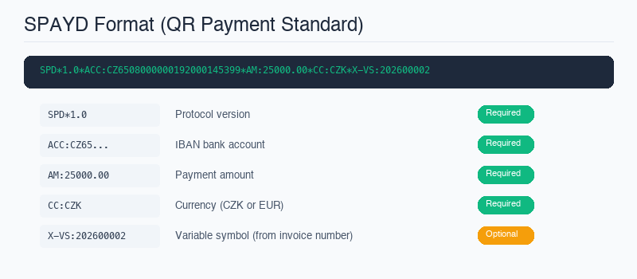

Customers receive your invoice and have to manually type the IBAN, amount, and variable symbol into their banking app.
Manual entry is slow, error-prone, and frustrating. A wrong digit in the IBAN or variable symbol means the payment doesn't match, requiring manual reconciliation. For businesses sending dozens of invoices per month, this adds up to real lost time on both sides.
This module adds a scannable QR code to every invoice — your customers open their banking app, scan, and pay in seconds.
Create and confirm an invoice as usual. The QR code is generated automatically for any posted invoice with a valid IBAN.
The QR code appears on the invoice PDF and in the Other Info tab. Customer opens their banking app and scans the code.
The banking app fills in IBAN, amount, currency, and variable symbol automatically. Customer just confirms — zero manual entry.



| Feature | Description |
|---|---|
| SPAYD Standard | Follows the official Short Payment Descriptor specification. Compatible with banking apps that support the SPAYD standard. |
| Customer & Vendor Invoices | QR codes work on both customer invoices (out_invoice) and vendor bills (in_invoice). Pay suppliers just as easily. |
| IBAN Validation | Full ISO 13616 checksum validation. Only valid IBANs produce a QR code — no broken payment data. |
| Variable Symbol | Automatically extracted from the invoice number (up to 10 digits). Essential for payment matching and reconciliation. |
| PDF Report | QR code appears on printed and emailed invoice PDFs below the payment terms. Customers can scan from paper or screen. |
| Form View | QR code visible in the Other Info tab of the invoice form. Accountants can verify the payment data at a glance. |
| CZK & EUR | Supports both Czech Koruna and Euro currencies. QR is only generated for these two SPAYD-supported currencies. |
| Auto-hide | QR code disappears automatically when the invoice is paid or the amount is zero. No visual clutter on settled invoices. |
| Zero Configuration | Just install and set a valid CZ/SK IBAN as the bank account on your invoices. No settings page, no API keys, no setup wizard. |
| Aspect | Without QR Payment | With QR Payment (this module) |
|---|---|---|
| Payment entry | ✗ Customer types IBAN, amount, VS manually | ✓ Scan QR → everything pre-filled |
| Error rate | ✗ Typos in IBAN or VS cause mismatched payments | ✓ Zero-error — data comes from the invoice |
| Payment speed | 1–3 minutes per payment | ✓ Under 10 seconds |
| Reconciliation | ✗ Manual matching when VS is wrong | ✓ Automatic — VS always matches |
| Customer experience | Standard | ✓ Modern, professional, fast |
Odoo 18.0 Community or Enterprise
Depends on: account (Invoicing)
Python: qrcode (pip install qrcode[pil])
Need help? Contact us at info@michalvarys.eu